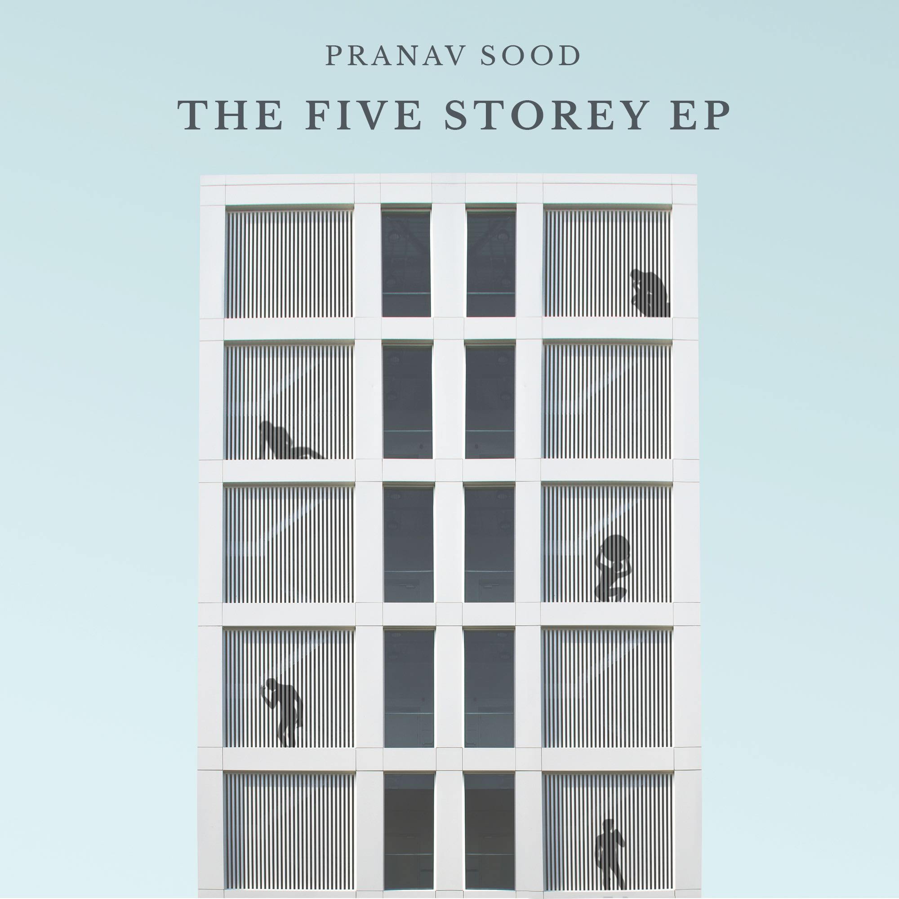
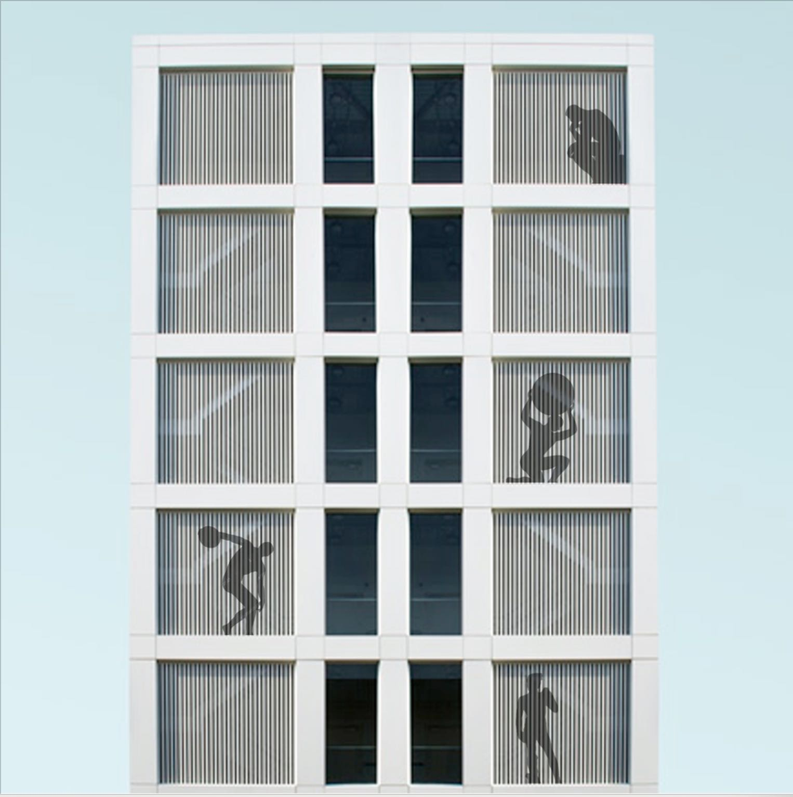

Album art for 'The Five Storey EP'
Custom album art for an EP
THE STORY
I was tasked to create album artwork for ‘The Five Storey EP’.
It featured 5 songs with different moods and that told unique stories.
THE SOLUTION
Custom artwork inspired by classical sculptures. Each song tells a unique story, represented by a corresponding sculpture.
These sculptures are expressive and portray unique moods and stories simply through their form.
They are also recognisable from their silhouettes alone.

I later created a launch show invite using the design language used for the cover.
PROCESS
Research involved interviewing the artist, to learn about the inspiration behind the music.
I listened to, asked about and defined the key themes expressed in each song.

I created a number of sketches that could represent buildings or ‘storeys’ and storytelling at the same time.

I later developed a number of concepts from initial sketches.
These did represent storeys of a building, but lacked the human storytelling element.

This was later brought in by including silhouettes in windows of a building.
Classical sculptures were ideal as they are recognisable from silhouettes.
Individual sculptures were selected to match the mood and ideas behind each song.
